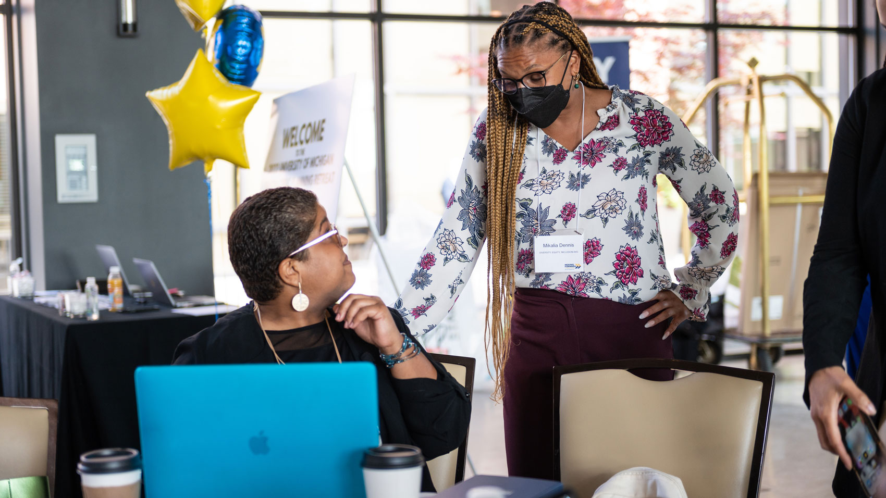
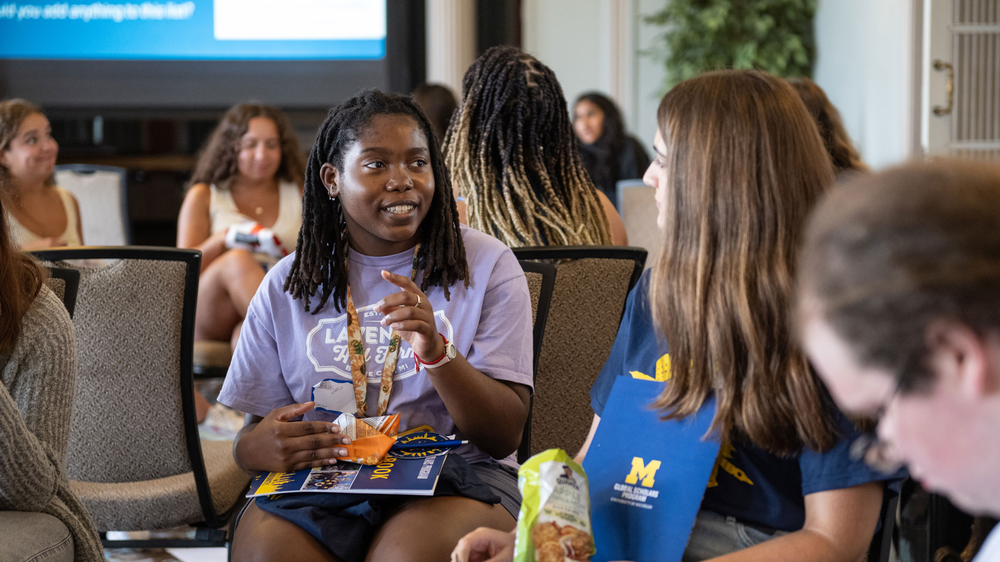

University Health Service (UHS)
Access comprehensive medical care, including routine check-ups, vaccinations, and specialist referrals.

This guide is set up to help you be successul inside and outside of the classroom and we have included the following resources throughout our site:
Keeping your body healthy is essential for success. The University of Michigan offers numerous resources to help you stay in top physical condition:
Access comprehensive medical care, including routine check-ups, vaccinations, and specialist referrals.
Participate in various fitness programs, sports clubs, and use of gym facilities to stay active and healthy.
Maintaining your mental well-being is crucial for thriving in graduate school. Here are resources to support your mental health:
Access individual counseling, group therapy, workshops, and crisis intervention services.
Work with a wellness coach to develop strategies for managing stress, time, and overall well-being.

Participate in mindfulness and meditation sessions to cultivate a calm and focused mind.
Join peer support groups for shared experiences and collective coping strategies.
Graduate school is more than just academics. It's important to cultivate a balanced life.